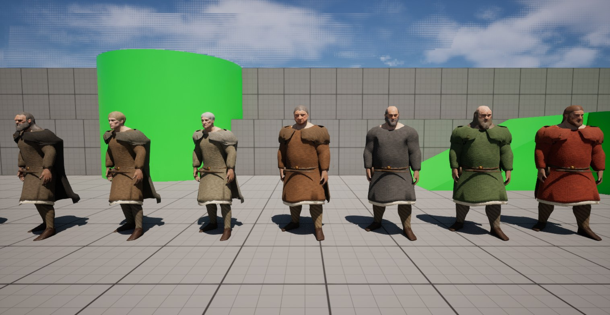
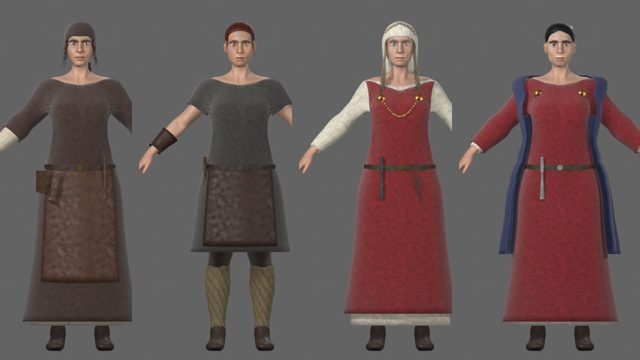
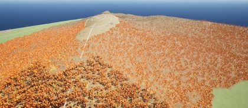
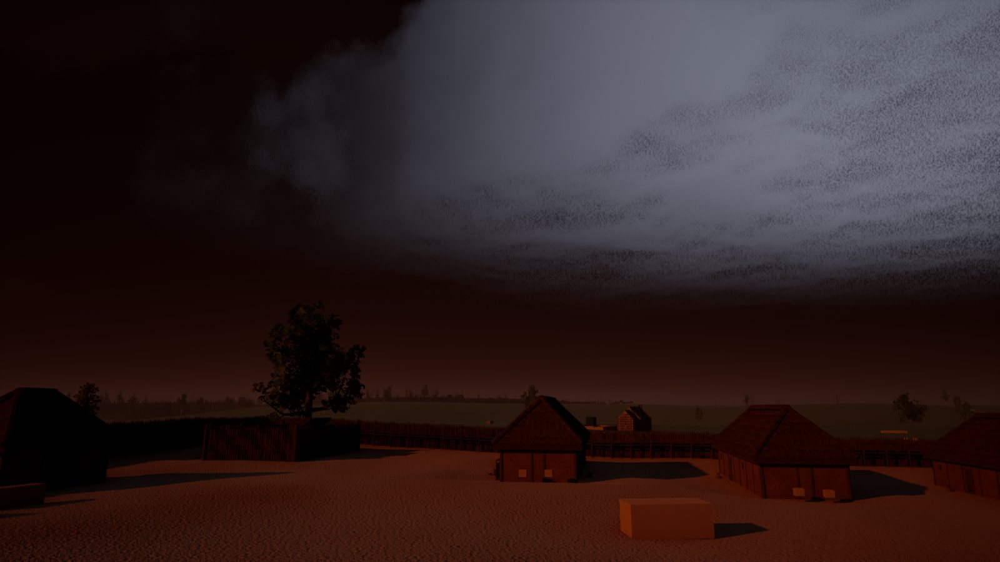
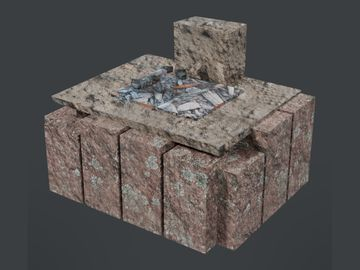
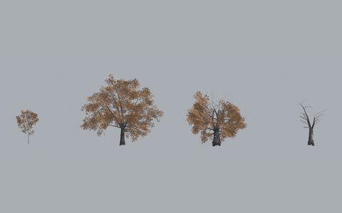
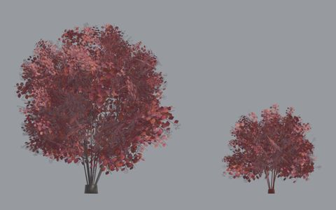
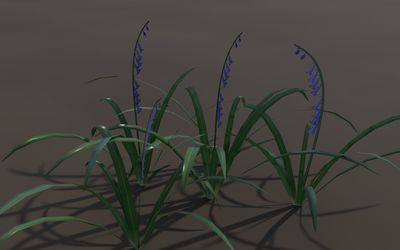

RoadMap
The checklists we build KnightZ by, published as we work. Each one has its own page with every item, every step and a picture of the finished piece. Click a checklist to open it.
Characters

79%Hero Characters
The sixteen male heroes, built on two shared bodies (standard and large) with swappable heads.
Open checklist →
83%Heroines
Four women on the new female body: Rhiannon, Elen, Hild and Nest.
Open checklist → 73%
73%Animations
Every move starts as a sentence of plain English and is generated by a text-to-motion model running on a local GPU, then retargeted, cut, measured and fixed by script.
Open checklist →World

74%Region Maps
Eleven region maps built from real elevation and river data for western Britain.
Open checklist →
82%Sky, Light and Seasons
The effects that run over every map: the volcanic ash sky, lightning, the red moon, the season switch, river water and firelight.
Open checklist → 48%
48%Buildings and Structures
The modular building kit: timber frames, wall panels, doors, roofs, stone, palisade and build stages, and the finished buildings assembled from them.
Open checklist →
39%Props and Materials
Household, craft, farm, chapel and war props, decals, and the shared material library that every building and prop draws from.
Open checklist →Plants

99%Trees
21 tree species built in Blender for KnightZ, 66 meshes in all, with a 5,000-triangle cap at full detail.
Open checklist →
100%Shrubs, Understory and Climbers
11 shrubs, 4 understory plants and 2 climber kits.
Open checklist →
100%Ground Plants and Crops
54 plants for the ground layer, each under 1,000 triangles with all four seasons packed on one 2048 texture sheet.
Open checklist →All checklists at a glance
| Checklist | Complete | Items | Progress | Steps |
|---|---|---|---|---|
| Hero Characters | 0 | 16 | 79% | |
| Heroines | 0 | 4 | 83% | |
| Animations | 0 | 20 | 73% | |
| Region Maps | 0 | 11 | 74% | |
| Trees | 18 | 21 | 99% | |
| Shrubs, Understory and Climbers | 17 | 17 | 100% | |
| Ground Plants and Crops | 54 | 54 | 100% | |
| Sky, Light and Seasons | 7 | 11 | 82% | |
| Buildings and Structures | 110 | 229 | 48% | |
| Props and Materials | 72 | 185 | 39% |
How the checklists work
Every item moves through the same steps as the rest of its checklist. A filled check means the step is done, a dot means it is in progress, and an empty box means it has not started. Items that do not need a step (a hero with no beard, for example) show it greyed out. Pages are regenerated from the project records with each update; the Dev Log covers the day-to-day work behind them.